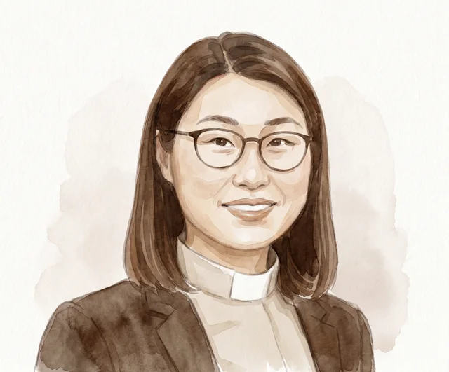
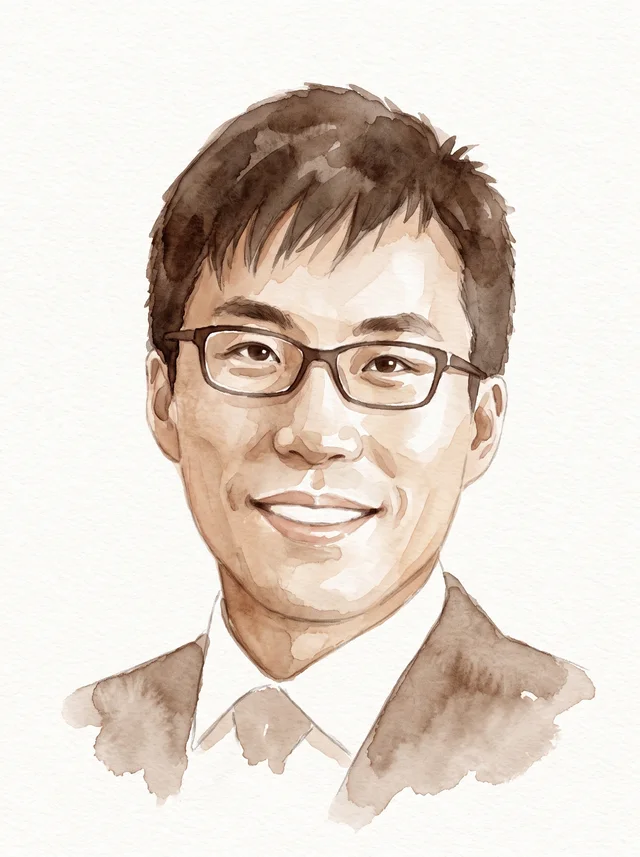
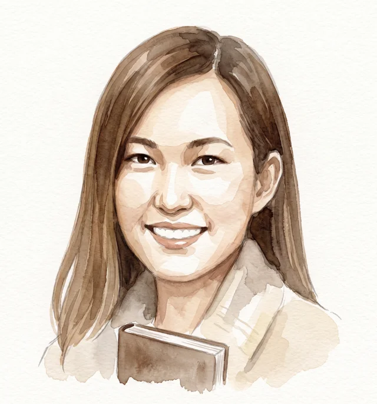
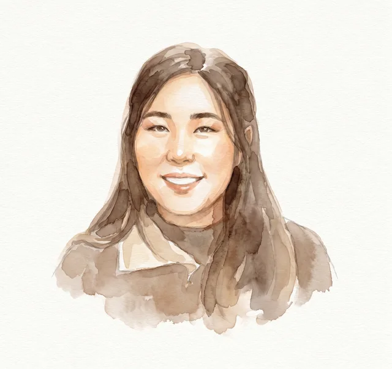
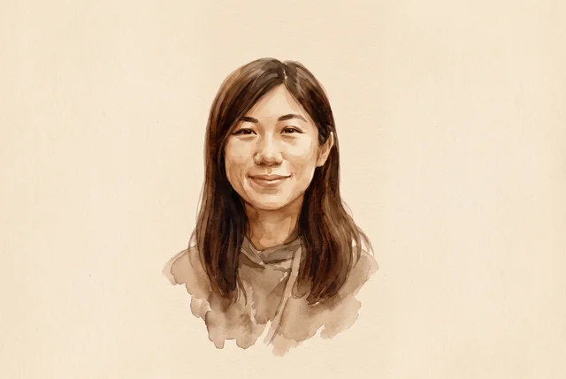

異象
在基督裡，建立生命的家
扎根觀塘，共建神家，讓不同年齡、不同生命階段的人，在群體中經歷福音與愛。

扎根於真理，在愛中彼此結連。
在觀塘，一起建造屬靈的家。
五旬節聖潔會迦福堂是一個在基督裡彼此結連的群體。我們同心敬拜，在真理中成長，並在日常生活中實踐愛與服事。
扎根觀塘，共建神家，讓不同年齡、不同生命階段的人，在群體中經歷福音與愛。
以基督的愛接觸社區，藉聖經的教導建立門徒，在同行與服事中活出信仰。
扎根真道，同心敬拜，彼此關顧；在教會、家庭、校園及職場，成為愛的見證。
在人生的每一個階段，都有一起走信心路的同行者。
在成長中扎根
使命之家、揚光之家
透過團契生活、校園及社區接觸，陪伴少年人認識基督，學習愛主愛人。
在轉變中同行
活泉之家、燃愛之家
由文憑試、大專走向職場，在新階段繼續建立信仰；棋匯坊也透過桌上遊戲及活動與新朋友結連。
在生活中實踐
申命、因愛、葡萄園、承命、傳愛、恩悅、希臨、恩溢小組
在工作與家庭中互相守望，藉查經、分享與事奉，一同實踐信仰。
在承擔中守望
彼此分享、激勵與代禱，在照顧家庭、面對退休等階段互相扶持，也將福音帶到金齡人士與長者當中。
在恩典中成長
關顧退休人士及弟兄姊妹的父母，藉查經、福音聚會、專題分享與探訪，建立彼此相愛的群體。
想認識適合你的團契？讓我們與你一起找到同行的群體。
聯絡我們
主任牧師

牧師

幹事

同工

神學生
從今天回望，每一步，
都有神的帶領與家人的同行。
踏上信心之旅，在觀塘成業街10號電訊一代廣場23樓A室新堂，一同獻上感恩，繼續宣教與牧養的使命。
教會完成新堂物業的購置及空間規劃，為崇拜聚會與長遠發展預備合適地方。
教會再次發起建堂捐獻計劃，購入電訊一代廣場A室一個約3,800呎的單位，為崇拜聚會及長遠發展預備空間。
教會開展「天國小錢」建堂捐獻計劃，購入電訊一代廣場23C2室的單位，踏上建堂的信心旅程。
龐錫滔牧師安息主懷，教會經歷領袖離世的哀傷與傳承的挑戰，由林淑櫻牧師承接教會的發展重任。
教會進入觀塘這片廣大禾場，青少年事工版圖更拓展至將軍澳，並開展入校工作。
面對教會發展的樽頸，龐牧師重整策略，深耕青少年事工，儲備未來的棟樑及天國精兵。
因應慈雲山區重建，教會進駐九龍城嘉福閣的單位，並有了一個承載祝福的新名字——迦福堂。
教會在慈雲山一間醫務所誕生，隨後在永光小學扎根，以「小學生佈道」為中心，「五旬節聖潔會慈雲山堂」逐漸成長。
不用擔心不熟悉教會，歡迎帶著你的問題來。
沒有特別要求，穿您覺得舒適的衣服就好。請避免衣著暴露，也不適宜穿著拖鞋。
不需要。奉獻是在明白奉獻意義的情況下自願的回應，並非必須。
約1小時30分鐘，包括詩歌敬拜和講道。
歡迎，我們週日崇拜設有直播間，方便攜同孩子參與。若您的孩子已踏入青少年階段，我們也設有青少年崇拜（週六17:30，適合中學及大專學生）。